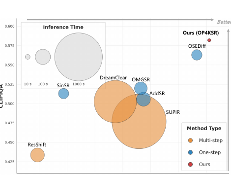
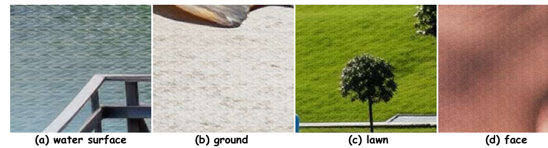
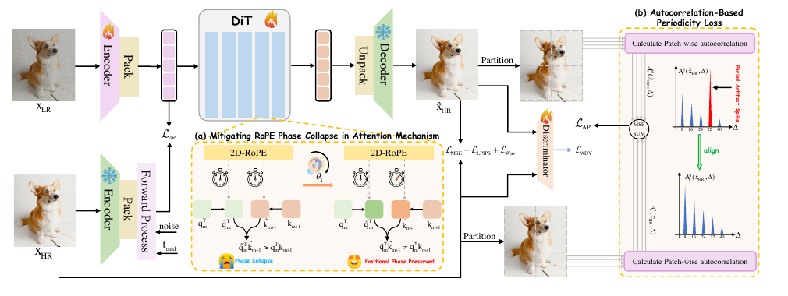
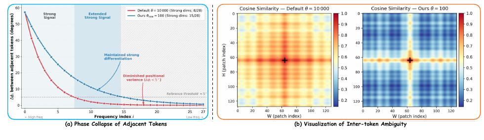
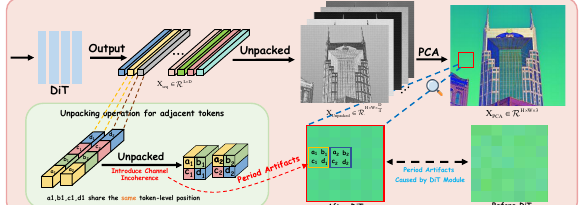
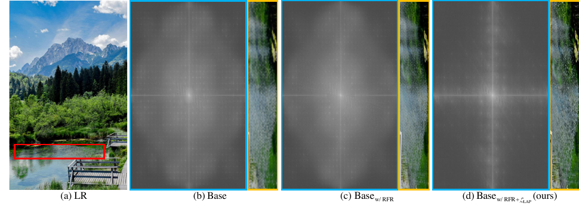

OP4KSR: One-Step Patch-Free 4K Super-Resolution with Periodic Artifact Suppression

⚠️ 关于代码：论文声明「Code, models, and datasets will be released upon paper acceptance」。截至本文撰写，GitHub 上搜不到官方仓库（已查 arxiv abstract、Papers with Code、GitHub 搜索均无）。因此本文 §2 / §4 中的代码块均为等价伪代码（非原文逐字），根据论文正文与公式重建，用于锚定主张，已逐一标注，绝不冒充引用。
1. 出发点 (Motivation)
把图超分到 4K（4096×4096）有两个绕不过去的坎：
- 显存爆炸。基于 T2I 先验（Stable Diffusion / Flux）的扩散超分，几乎都在「低分辨率定域」训练（如 128→512）。直接外推到 4K，既泛化崩坏又显存爆表。
- 分块推理的原罪。为了塞进显存，主流做法是把图切成 patch、各自超分、再拼回去。这条路在 4K 上引出三宗罪（见下图）：语义混淆（孤立 patch 没有全局约束，被文本先验带跑，把背景墙脑补成大象皮肤）、空间不一致（相邻 patch 一个被锐化、一个被过度平滑，拼缝处突变）、以及慢（SUPIR 把 1024→4096 要 ~1600 秒）。

作者的主张是：不要分块。用 UltraFlux 的 F16（16× 压缩）VAE 把 4K 图直接压到单卡能放下的 latent，于是模型一次就能看到整张图（全局感受野），语义和空间一致性问题从根上消失。代价是：把多步 Flux 砍成一步前向后，会冒出周期 32 像素的格子伪影——这就是论文后半篇的主战场。
Real-ISR
真实世界图像超分：输入是带未知退化（模糊/噪声/压缩）的低清图，不是简单 bicubic 下采样。
F16 VAE
把图像在每个空间维上压缩 16 倍的 VAE（常规 SD 是 F8）。4096×4096 经 F16 + 2×2 打包后 latent 只剩 128×128。
Flow Matching
一种生成式建模框架：在纯噪声 ε 与数据 z 之间走一条直线插值 z_t = t·z + (1-t)ε，网络学这条流的速度场。[概念页]
一步 (One-Step)
把扩散/流的多步迭代采样压成单次前向，推理快几十倍，但失去多步迭代的「纠错缓冲」。
RoPE
旋转位置编码：用一个 2D 旋转矩阵给每对特征通道注入位置信息，旋转角由基频 θ 控制。
Pack / Unpack
Flux 把相邻 2×2 的 latent 像素折进通道维（pack）送进 DiT，出来再展开（unpack）。4 个子像素 (a,b,c,d) 共享同一个 token 位置。
中间时刻对齐
OMGSR 的技巧：不在 t=0（纯噪声）注入低清 latent，而是锚在 t_mid=0.3，缩小分布鸿沟，让一步 SR 可行。
自相关 (Autocorrelation)
图像在空间上平移 Δ 后与自身的相关度。周期性伪影会在 Δ=32 处出现一个尖峰。
2. 方法 (Method)

2.1 一步、无分块的主干
整套建立在 Flow Matching 上。中间 latent 是噪声 ε 与高清 latent \(z_{\mathbf{HR}}=E(\mathbf{HR})\) 的线性插值：
—— 翻译: t=1 时是干净高清 latent，t=0 时是纯噪声，中间按比例混。网络要学的是从某个 t 出发、一步预测出干净 latent 的能力。
关键不在这条公式本身，而在把低清 latent \(z_{\mathbf{LR}}=E(\mathbf{LR})\) 注入到哪个 t。如果像生成那样从 t=0（纯噪声）注入，模型期待的是噪声、拿到的却是结构化图像内容，分布鸿沟巨大、先验被打乱。作者沿用 omgsr-2025 的思路：把 \(z_{\mathbf{LR}}\) 锚在中间时刻 \(t_{mid}=0.3\)，并加一个潜空间对齐损失 \(\mathcal{L}_{vae}\) 把 \(z_t\) 拉向 \(z_{\mathbf{LR}}\)。这样一步前向就能做超分。
⚠️ 澄清一个易混点：这里的「一步化」不是师生蒸馏——OP4KSR 没有 teacher、没有 score distillation。它和 omgsr-2025 一样是 GAN 式一步微调：监督来自真值 HR 图（\(\mathcal{L}_{MSE}+\mathcal{L}_{LPIPS}+\mathcal{L}_{Wav}\)）+ 一个判别器（\(\mathcal{L}_{ADV}\)，见 Fig.3 架构图里的 Discriminator），靠 \(t_{mid}\) 锚定让一步可行。这和 OSEDiff(VSD)/SinSR(一致性蒸馏) 那种「有老师」的路线是两回事。
直觉类比：多步扩散像「先涂底色再反复修」，一步超分像「一笔到位」。要一笔到位，你得从一个已经很接近成品的草稿（t=0.3 的半成品，而非白纸）起笔——这就是中间时刻对齐在做的事。
2.2 病因诊断：32 像素的格子从哪来
作者观察到一步化后的原始预测有精确周期 32 像素的格子伪影。32 = 16（VAE 压缩）× 2（2×2 打包）——恰好是「一个 latent token 对应的像素尺度」。病因拆成两层：
(i) RoPE 相位坍缩，相邻 token 不可分。 2D-RoPE 按惯例用高基频 θ=10000（为 T2I 的长程依赖服务）。相邻 token（空间距离 Δm=1）的旋转角差为：
—— 翻译: 每对特征通道 i 分到的「相邻位置旋转角」随 i 指数衰减。θ 越大，衰减越快、绝大多数通道分到的角度越接近 0。
在 θ=10000 下，绝大多数维度的 \(\Delta\phi_i \lt 5°\)，于是 \(\cos(\Delta\phi_i)\approx1,\ \sin(\Delta\phi_i)\approx0\)，旋转矩阵 \(R_{\Delta m=1}\approx I\)（BF16 精度下更被数值抹平）。后果是相邻 query/key 的内积从 \(\hat{q}_m^\top \hat{k}_{m+1}=q_m^\top R_{\Delta m=1} k_{m+1}\) 坍缩回未编码的 \(q_m^\top k_{m+1}\)，位置相位整个丢掉。相邻 token 的 attention 分数几乎一样——网络分不清谁是谁。

(ii) Unpack 把通道当空间用，引入子像素错位。 一个 2×2 子像素块 \((a_1,b_1,c_1,d_1)\) 被打包进同一个 token 的通道维。DiT 只在 token 级注入位置编码，所以这 4 个子像素在整个 transformer 里共享同一个位置——而通道维本身没有空间语义，网络分不清哪个通道是左上 \(a_1\)、哪个是右下 \(d_1\)。

两层叠加的机制很巧妙：在平坦区，相邻底层特征本就相似，而相位坍缩（药 i）又没法打破这种对称，于是网络把不可分的 token 揉成均匀团块（\(a_1\approx a_2\)），unpack 时那个有结构偏置的 \((a_1,b_1,c_1,d_1)\) 模式被机械地一格一格平铺出去 → 放大成周期格子。反之在高频区，相邻特征本身方差大，自然打破了对称（\(a_1\neq a_2\)），平铺被扰乱——这就解释了为什么伪影只祸害平滑区。
2.3 解药一：RoPE 基频重标定 (RFR)
针对病因 (i)：把基频 θ 从 10000 降到 100。Eq. (2) 告诉我们 θ 越小、\(\Delta\phi_i\) 衰减越慢，于是强位置信号（\(\Delta\phi_i \gt 5°\)）的有效带宽从 8 维扩到 15 维（Fig. 4a），Fig. 4b 中那片模糊高相似区被压缩，相邻 token 重新可分。
等价伪代码 — 非原文逐字（据 §3.2(i) 与 Eq.2 重建，对应 Fig.4 的 RFR）
# 唯一改动：构造 2D-RoPE 频率表时，把 base 从 10000 换成 100
# theta 越小 -> inv_freq 衰减越慢 -> 相邻 token 的旋转角差更大 -> 更可分
def build_2d_rope_freqs(dim_per_axis, base=100): # 默认 Flux/T2I 用 10000
i = torch.arange(0, dim_per_axis, 2) # 复数通道对索引
inv_freq = base ** (-i / dim_per_axis) # = theta^(-2i/d)，即 Δφ_i
return inv_freq # 其余 RoPE 旋转逻辑完全不变
这是改动最小、却最反直觉的一刀：LLM/T2I 里 θ=10000 是为长程依赖调的「全局最优」，搬到压到 128×128 的细节导向 SR 上反而是病根。把 θ 调小 100 倍，等于把位置编码的「频谱」对齐到紧凑 latent 的尺度。
2.4 解药二：自相关周期性损失 (L_AP)
针对病因 (ii) 残留的子像素错位（RFR 解决不了通道维的空间盲）。思路：周期伪影在自相关图上会在 Δ=32 处出现尖峰，那就直接在像素域逼网络把自相关对齐到 GT。
两个设计细节是精髓：
- 分象限（Q=4）算，而非全局。全局自相关会被无伪影区的自然频率稀释掉那个集中的周期信号；分块才能把异常隔离出来。
- 约束一组等间隔 lag \(K=\{8,16,24,32,40\}\)，而非只盯 32。只压基频 32 会被网络用「整体糊一糊」糊弄过去；约束多个 lag 逼它复现 GT 真实的空间相关结构，而不是单纯抹掉异常。
—— 翻译: 对 4 个象限 q、每个通道 c、每个目标 lag Δ、水平/垂直两个方向 i，算预测图与 GT 图的 2D 自相关之差的平方，平均起来。GT 一侧从计算图 detach（只当目标，不回传梯度）。
等价伪代码 — 非原文逐字（据 §3.2(ii) 与 Eq.3 重建，对应 Fig.3(b) 的 L_AP）
def autocorr_periodicity_loss(x_hat, x_gt, lags=(8,16,24,32,40), Q=4):
x_gt = x_gt.detach() # GT 只作目标，不回传
loss = 0.0
for xq_hat, xq_gt in zip(quadrants(x_hat, Q), quadrants(x_gt, Q)): # Q=4 象限
for d in lags: # 多个空间 lag，不止 32
for shift in (roll_h, roll_v): # 水平 / 垂直两个方向
a_hat = (xq_hat * shift(xq_hat, d)).mean(dim=(-2, -1)) # 逐通道自相关
a_gt = (xq_gt * shift(xq_gt, d)).mean(dim=(-2, -1))
loss += F.mse_loss(a_hat, a_gt)
return loss / (2 * Q * x_hat.shape[1] * len(lags))
总损失是 \(\mathcal{L}_{vae}+\mathcal{L}_{MSE}+\mathcal{L}_{LPIPS}+\mathcal{L}_{Wav}+\mathcal{L}_{ADV}+\mathcal{L}_{AP}\)（各项细节在补充材料；本文重点是后者）。
2.5 两味药的分工（设计决策表）
| 组件 | 起点 | 病因层 | 最终选择 | 为什么 |
|---|---|---|---|---|
| 主干 VAE | F8（SD 标配） | 4K 显存爆炸 | F16（UltraFlux） | 16× 压缩让 4096² 的 latent 只剩 128²，单卡可放下整张图 → 无需分块 |
| LR 注入点 | t=0（纯噪声） | 分布鸿沟 | t_mid=0.3 + L_vae | 从「半成品草稿」起笔，一步前向才稳（沿用 OMGSR） |
| RoPE 基频 θ | 10000（T2I 默认） | 病因(i) 相位坍缩 | 100（RFR） | 对齐紧凑 latent 尺度，强位置带宽 8→15 维，相邻 token 重新可分 |
| 周期约束 | 无 / 只压 32 | 病因(ii) 子像素错位 | 多 lag + 分象限 L_AP | 分象限防稀释、多 lag 防「糊弄式平滑」，逼网络复现真实空间相关 |
3. 结论 (Key findings)
数字（论文 Table 3/4/5/6）：
- 效率是最大卖点（Table 5）。1024→4096 单卡 H20：OP4KSR 5.75 s，OMGSR（同为 Flux 一步）91.33 s（≈16×），多步 SUPIR 1643.7 s（≈280×）。显存 32.88 G，是一众方法里偏低的（SUPIR 53.26 G、OMGSR/DreamClear 64 G）。
- 感知保真领先（4KSR-Syn，Table 3）。LPIPS 0.3297（全场最低）、DISTS 0.1496（最低）、TOPIQ-FR 0.4507（最高）、MUSIQ 56.51、NIMA 4.68（均最高）。代价是 PSNR/SSIM 偏低（PSNR 24.31，垫底）——这是感知-失真权衡里典型的「偏感知」站位。
- 真实世界鲁棒（Table 4）。4KSR-RealSquare / RealVary 上 MUSIQ（55.24 / 57.13）、CLIPIQA（0.5820 / 0.5831）、NIMA（4.47 / 4.46）多项第一。作者强调它是唯一能在真实退化下准确重建规则瓷砖纹理和锐利文字边缘的方法。
- 消融证明两味药互补（Table 6 + Fig. 6）。Base PSNR 高但伪影重；单加 RFR 或单加 L_AP 都涨感知（MUSIQ 52.94→54.73 / 55.12），二者合用最好（MUSIQ 56.51、CLIPIQA 0.6135）。FFT 谱（Fig. 6）直观显示：Base 有格状高频尖峰 → +RFR 部分稀释但仍在 → +L_AP 谱恢复平滑、尖峰消失。

4. 实现细节 (Implementation notes)
无官方代码（声明「接收后释放」），以下细节均来自论文正文与图表，逐条标注出处；凡涉及代码逻辑处见 §2 的标注伪代码。
- 训练只动 encoder + DiT，冻结 VAE decoder（§4.1）。DiT 主干用 LoRA rank=64 微调，VAE encoder 也微调。decoder 冻结以保住像素重建质量。
- 固定文本提示，跳过在线打标（§4.1）。采用 S3Diff 流水线里的固定 prompt，省掉文本特征提取开销——这也呼应了 §1 的主张：分块方法被「在线文本提取」带跑是语义混淆的来源之一，OP4KSR 干脆固定提示。
- 训练规模极小：AdamW，lr=2.5e-5，8×H20，有效 batch=16，总共只 2000 iters、约 2 天。对 4K 任务而言这是相当轻量的训练预算（得益于 LoRA + 一步范式 + 中间时刻对齐）。
- L_AP 的 GT 分支 detach（Eq.3 文字）。GT 自相关只作目标、不回传梯度，避免把 GT 也往「好优化」的方向带。
- 评测用 patch-based 策略（§4.1）。注意一个微妙点：深度特征类指标（CLIPIQA/LPIPS）对分辨率敏感，所以评测时仍按 patch 算指标——但这只是度量手段，推理本身是无分块的全图一步前向，两者别混淆。
- 32 像素这个数字是推出来的，不是凑的（§3.2）：16（F16 VAE）× 2（2×2 pack）= 32，恰好一个 latent token 的像素覆盖。伪影周期与之精确吻合，是「病因落在 token 边界」的直接证据。
paper-vs-code 差异：无代码可对照，无法核验 RFR 是否在所有 RoPE 调用点统一改 θ、L_AP 的自相关是否真用 FFT 加速、Q=4 象限是否重叠切分等实现细节——这些在补充材料里，正文未给。待官方仓库释放后需复核。
5. 批判性总结 (Critical assessment)
Strengths
- 诊断比方案更出彩。把「一步 Flux 超分的格子伪影」精确归因到 RoPE 相位坍缩 + unpack 通道盲两层，并用相位差衰减曲线、cosine 热图、PCA、FFT 谱四种证据交叉佐证（Fig. 4/5/6）。这套「现象→机制→证据」的诊断链是论文最扎实的部分。
- 两味药都便宜。RFR 是改一个常数（θ:10000→100），零额外参数、零额外算力；L_AP 只是训练期多一项损失，推理不受影响。性价比极高。
- 效率数字硬。5.75 s 出 4K、单卡 32.88 G，对落地（手机端 4K 显示需求）是真有意义的，不是刷榜数字。
- 补了 4K 数据缺口。4KSR-Train（34k 高保真）+ 3 个 benchmark（1 合成 2 真实），并给了三阶段筛选流水线（Laplacian/Sobel/GLCM/熵 → DEResNet/LAION 美学 → Qwen3-VL）。
Limitations / open questions
- PSNR/SSIM 垫底（Table 3：PSNR 24.31，全场最低）。作者自己在 §6 承认细节恢复有限，计划加高频补偿——这是 F16 极压缩的物理代价（信息被压没了，decoder 补不回来）。偏感知的站位不是所有场景都买账（医学/遥感等保真优先场景慎用）。
- θ=100 是个魔数。论文只对比了 10000 vs 100，没有 θ 的扫描曲线，也没说不同压缩率/分辨率下最优 θ 怎么变。RFR 的「对齐 latent 尺度」直觉成立，但缺一条 θ–质量曲线来支撑「100 是最优」而非「凑出来能用」。
- L_AP 的 lag 集 {8,16,24,32,40} 也没消融。为什么是这 5 个、为什么到 40 截止、改成别的会怎样，正文未答。
- 无代码、无 θ/lag 敏感性、训练只 2000 iters 三者叠加，让人有点担心结果的可复现性与对超参的鲁棒性。等官方仓库。
- 和真正的多步方法比 PSNR 仍有差距，且「一步」的代价（细节恢复弱）在极端退化下可能放大。
When to use / not use
- 该用：要在单卡上快速出 4K、且感知质量优先于像素保真的场景（消费级图像增强、显示端超分、批量预览）。
- 别用：保真度第一（PSNR/SSIM 是验收指标）、或需要逐像素可信的场景；以及你无法接受「魔数 θ/lag + 暂无代码」带来的复现风险时。
延伸阅读 (Further reading)
交叉验证比较 (Cross-validation against similar work) — OP4KSR 与另外两条「一步扩散/流超分」路线对照，看它们对同一问题给出的结论与观察是否一致：
| 工作 | 核心结论 | 关键观察 | 与本文的异 / 同 |
|---|---|---|---|
| 本文 OP4KSR | F16 无分块 + 一步是 4K 超分的可行路径，但会触发 32px 周期伪影，需 RFR+L_AP 治理 | 伪影源于 RoPE 相位坍缩 + unpack 通道盲，只祸害平坦区 | — |
| oftsr-2024 | 一步流超分可把「保真↔真实感」整条权衡曲线塞进单步（调 t 即可滑动） | 单步蒸馏过去只能锁死曲线上一点；噪声增广 + PF-ODE 轨迹约束能解锁整条 | 同: 都做一步、都承认一步偏感知失保真; 异: OFTSR 在「可调权衡」上下功夫且开源、分辨率到 256/512 级，OP4KSR 主攻 4K 的显存与伪影、用固定站位 |
| omgsr-2025（本文直接前身） | 一步 SR 靠「SNR 算出的中间时刻 t* + LRR + GAN」可行（SD/Flux 通用） | 真实图输入与预训练噪声分布有鸿沟，需中间时刻桥接；GAN 而非蒸馏 | 同: 都用 Flux + 中间时刻对齐 + GAN; 异: OMGSR 未处理 4K 显存（仍 64 G、91 s、测试要 tiled 分块）也未根治周期伪影——本文 Table 3/4 显示 OMGSR 周期伪影明显、感知指标垫底 |
分歧的可能成因：三者结论的差异主要来自目标分辨率与约束维度——OFTSR 在中低分辨率上优化「权衡曲线的可调性」，OMGSR 解决「实图↔噪声分布鸿沟」但停在 F8/小图，OP4KSR 则把战场推到 4K，于是 F16 极压缩成了必选项，而极压缩 + 一步又恰恰是周期伪影的触发条件——本文的全部新增机制（RFR、L_AP）本质都是在为「4K + F16 + 一步」这个特定组合还债。换句话说，它们不矛盾，是在权衡曲线的不同点上各自做局部最优。
相关工作 (Related work)
- omgsr-2025 — 本文直接前身：SNR 选中间时刻 + LRR + GAN 一步超分（OMGSR-F 是 OP4KSR 的起点）
- oftsr-2024 — 一步流超分 + 可调保真/真实感权衡
6. 研究启发 (Transferable takeaways)
1. 超参的「全局最优」换域即失效
θ=10000 是 LLM/T2I 为长程依赖调的默认值，搬到压到 128² 的细节导向任务上反成病根。迁移预训练架构时，位置编码的频谱要重新对齐到新任务的空间尺度——一个常数的代价可能是整片伪影。
2. 把伪影翻译到它「显形」的域里治
周期伪影在像素域难描述，但在自相关/FFT 域是一个尖峰。选对表征域，损失函数就能精准打击而不误伤——L_AP 在自相关域、消融验证在 FFT 域，都是这个套路。
3. 分块 vs 全局是「约束」之争，不只是显存之争
分块的三宗罪（语义混淆/空间不一致/慢）本质是丢了全局约束。能把全局塞进单次前向（靠极压缩），一致性问题从根上消失——值得在别的「大图/长序列」任务上类比。
4. 反直觉点：伪影只挑平坦区下手
违反直觉——平坦区「最好做」却最容易出格子。因为高频区的自然方差能打破打包对称性，平坦区没有这个「天然扰动」。均匀/简单的输入有时才是病灶。
讨论 / Comments
评论托管在本仓库的 GitHub Discussions, 需 GitHub 账号。